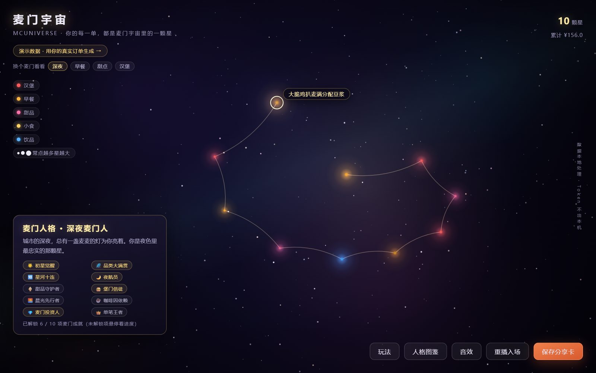
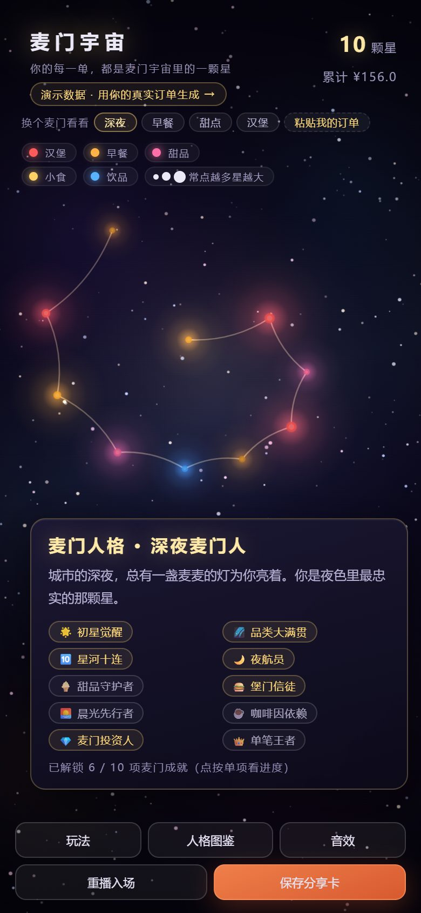
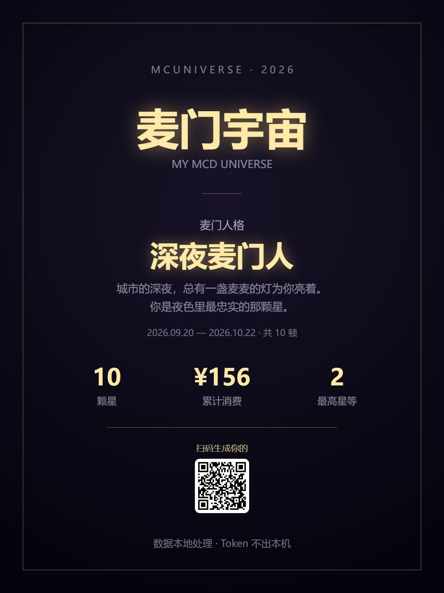
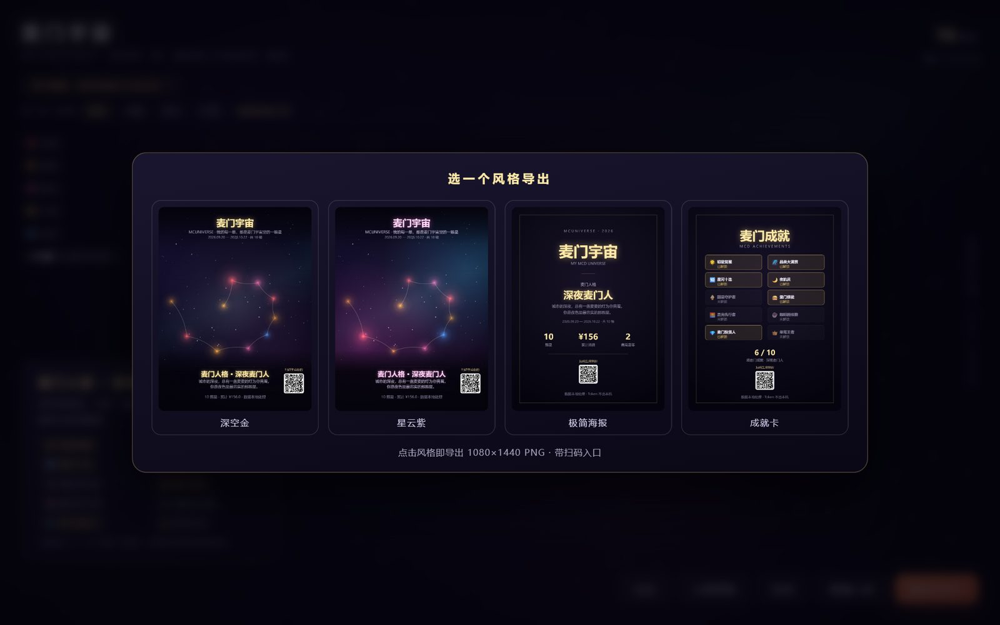

没有订单文件也能试：面板里点「填入示例」，三步就能看到自己的星图。源码在 GitHub
把你在麦当劳的历史订单，变成一片只属于你的星空，并顺手告诉你「你是哪种麦门人」。
每一笔订单是一颗星：颜色是餐品品类（汉堡/早餐/甜品/小食/饮品），星等是消费频次与金额，位置是下单时间，相邻订单连成星轨——时间从左向右流成一条旋臂。
演示数据是别人的星图。想看自己的，不需要 Token、不需要账号、不需要装环境 —— 演示页里粘一段订单 JSON 就行，解析全在浏览器里完成。
query-order-list 的返回原样粘进来都认：{data:{list:[…]}}、{list:[…]}、纯订单数组。手边没有数据就点「填入示例」—— 三单，够看出颜色、星等、星轨在讲什么。和命令行版是同一套规则：模板里的模型与 src/star_model.py 逐条对齐（品类关键词顺序、星等阈值、人格判定的 22 点与 2:59 边界），并由「双实现比对」测试按字段逐一校验。数据不出浏览器：粘贴时没有任何网络请求，页面上也没有任何指向外部主机的资源。




| 环节 | 做法 |
|---|---|
| 取数 | 麦当劳中国官方 MCP：order-list 拉历史订单、query-my-account 取积分、campaign-calendar 取今日活动（共 35 个工具） |
| 归类 | Python 星图引擎：餐品名→品类规则、金额/频次→星等 1~5、时间段→人格判定 |
| 渲染 | 单文件 HTML + Canvas：加色混合发光、460 颗背景星三层纵深、星云雾带、粒子入场、拖拽/缩放/视差 |
| 性能 | 每帧有预算：手机 4× 降速下开场每帧 1.0ms、稳态 0.4ms（60fps 的总预算 16.7ms）· 稳态每帧新建渐变 0（曾因星轨逐段建渐变达到 10 个）· 首屏 98ms（手机 4× 降速 451ms）· 整页 118KB · 外部请求 0 |
| 在线生成 | 浏览器内跑同一套星图规则（品类/星等/人格），与 Python 管线由 test_model_parity 逐字段交叉校验；订单只在本地解析 |
| 工程 | 零运行依赖 · 78 条测试 · ruff 全绿 · CI 四版本矩阵 · 真实浏览器 E2E 十态冒烟（含深链导入、触屏手势与微信/iOS/安卓三种交付容器） · 分享卡版式规格化 + 几何断言 · 页面版式体检（卡片空洞 / 行高对齐 / 横向溢出）· 社交预览元信息检查 · 键盘与读屏可用 |
演示页使用匿名化模拟数据，打开即玩；真实使用需在自己的电脑上配置 MCD_MCP_TOKEN（仅存环境变量），订单数据全程本地处理、不上传、不留存。